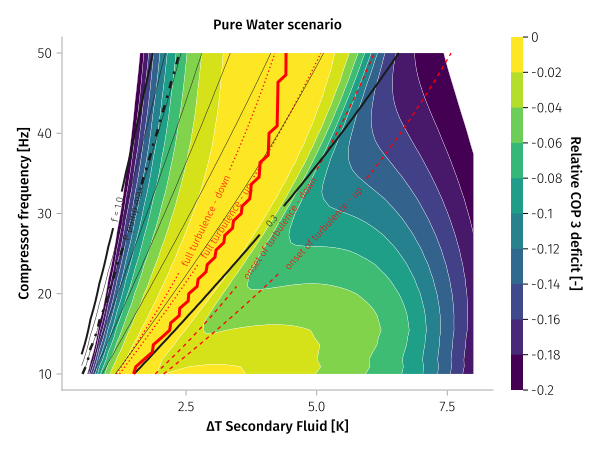

Insights into the Optimal Flow Rule for GSHP Systems
This paper investigates the question of flow control in ground source heat pump (GSHP) systems. We focus on systems with a single heat pump connected hydraulically to a borehole without decoupling tanks. The study develops a coupled thermal-hydraulic model that considers steady-state conditions with the borehole wall as the boundary condition. The model incorporates principles of fluid mechanics and heat transfer while accounting for thermal properties of both ground and heat pump components.
Ground Source Heat Pump, Flow Control, Thermal-Hydraulic Coupling, Optimization
1 Abstract:
This paper will look into the question of the flow control in GSHP systems. We will focus on systems with a single heat pump connected hydraulically to a borehole in terms of hydraulics, no decoupling tank.
2 Introduction
Heat pump in genreal and GSHP in particular are essential tools allowing for the decarbonization of the heating sector. The question of the flow control in GSHP systems is a central one, as it allows for the optimization of the system performance and the reduction of energy consumption. The cost of changing a few variables in a control algorithm is minimal. Therefore, it is important to understand the hydraulic aspects of GSHP systems in order to design effective control strategies. The flow control in GSHP systems is a complex problem that involves the interaction between the heat pump, the borehole, and the ground. The flow rate through the borehole is influenced by several factors, including the temperature difference between the fluid entering and leaving the borehole, the thermal conductivity of the ground, and the pressure drop across the borehole. In addition, the flow rate is also affected by the control strategy used to operate the heat pump.
In this paper, we will focus on the hydraulic aspects of GSHP systems, specifically on the flow control in systems with a single heat pump connected hydraulically to a borehole. The model developped considers a steady state model of the inner problem, and sets the borehole wall as the boundary condition. The model is implemented in ModelingToolkit.jl, a Julia package for modeling and simulation of dynamic systems. The model is based on the principles of fluid mechanics and heat transfer, and takes into account the thermal properties of the ground and the heat pump.
3 Literature Review
Several tools exist to model GSHP:
Modelica
Trnsys
EES
Python
Combinations of the above/co simulation
4 Methods:
4.1 Modeling framework:
We dedided to implement the model from scratch using ModelingToolkit.jl. This ecosystem overlays onto Julia. It is very similar in principle to Modelica: an acausal component based framework. However, there are a few key reasons why this tool has been chosen over the alternatives: free, open source.
The GSHP system model consists of three coupled submodels that are solved together: thermodynamic cycle (thermal system), borehole heat exchanger, and pump hydraulics (hydraulic system). The steady-state system is solved using ModelingToolkit.jl with symbolic manipulation and NonlinearSolve.jl library for the solvers.
The model implementation prioritizes modularity and extensibility, allowing for easy modification of individual components while maintaining system-level coupling consistency. The thermal-hydraulic separation enables efficient parameter studies and optimization while ensuring physical consistency through the coupling interface. The model architecture employs a modular approach typical of ModelingToolkit, where fundamental components such as thermophysical properties are defined first and then used to build parent components like the pump and compressor. Both the thermal and hydraulic models are coupled through mass flow (the secondary fluid mass flow from the thermal system sets the design flow for the hydraulic system), temperature (borehole inlet/outlet temperatures link the thermal and hydraulic properties), and performance feedback (pump power from the hydraulic system feeds into overall system KPIs). The solution strategy follows a sequential approach: first, the thermodynamic cycle is solved for given boundary conditions; next, mass flows, temperatures, and thermal loads are extracted; then, the hydraulic system is solved using these outputs as boundary conditions; finally, thermal and hydraulic results are combined to compute overall system performance metrics, including auxiliary heating requirements if the heat pump capacity is insufficient.
4.1.1 Thermophysical properties:
Clapeyron.jl and EntropyScaling are used for determining the properties of the refrigerant. CoolProp correlations are used for the secondary fluid.
4.1.2 Thermodynamic Cycle:
The thermodynamic cycle implements a R134A cycle with the following components:
4.1.2.1 Evaporator:
A moving-boundary plate heat exchanger evaporator with dynamically allocated regions for two-phase evaporation and single-phase superheating. The model features:
- Geometric modeling: Chevron plate geometry with adjustable plate spacing (b), number of plates (np), width (W), enlargement factor (ϕ), and chevron angle (β)
- Two-zone heat transfer: The evaporator length is split between evaporation and superheating zones. The fraction of the HX occupied by each zone is a variable.
- Heat transfer correlations:
- Two-phase region: Amalfi correlation for convective boiling in plate heat exchangers (avergaed ovr a vapor quality range)
- Superheating region: Martin correlations for single-phase plate heat exchanger flow with laminar-turbulent (smooth) transition
- Boundary conditions: Fixed superheat degree (ΔTSH) and secondary fluid temperature difference (ΔTSF) as control variables
The smooth transition is necessary for the solver to
- Friction: Darcy-Weisbach equations with smooth transition between laminar and turbulent regimes using error function blending
- Friction factor: Enhanced Colebrook-White correlations
- Heat exchanger losses: Chevron-plate correlations based on Martin’s work for pressure drop in plate heat exchangers
4.1.2.2 Compressor:
The compressor model incorporates:
Volumetric displacement: Fixed displacement volume with frequency-controlled capacity -
Isentropic efficiency: Constant isentropic efficiency
4.1.2.3 Expansion Valve:
Modeled as an isenthalpic expansion process. A constraint imposed in the solver is the superheating degree.
4.1.2.4 Condenser:
Simplified model assuming constant condensing temperature and specified subcooling degree (ΔTSC). The detailed condenser heat transfer is not modeled, focusing on the evaporator side.
4.1.3 Borehole Heat Exchanger:
The U-tube grouted borehole is simulated by two different models:
4.1.3.1 Thermal:
- Analytical solution: Uses eigenvalue decomposition of coupled 1D ODEs to solve the temperature profiles along the borehole depth
- Multipole method: For the grout resistance, we implement thermal resistance calculations between pipes and to the borehole wall using multipole approximations for complex geometry effects ref needed
- Heat transfer coefficients: Derived from the borehole geometry and dynamical fluid properties
- Boundary conditions: Uniform borehole wall temperature as the thermal boundary condition
- Temperature profiles: Analytical expressions for fluid temperatures in both legs as functions of depth
4.1.3.2 Hydraulic:
The borehole thermal model is connected to the hydraulic system through temperature-dependent fluid properties.
- Pipe friction: Darcy-Weisbach equations with smooth transition between laminar and turbulent regimes using smooth blending (erf)
- Friction factor: Enhanced Colebrook-White correlations with automatic regime detection
- Component-wise pressure drops: Individual calculation for each system component (evaporator, borehole, connecting pipes)
4.2 Pump
Since the hydraulic mode is decoupled from the thermal model, there is no feedback from hydraulic losses to the thermal model, which is a limitation that affects the high flow simulations. In reality, better performances are expected in reality thanks to the added heat in the heat source loop, both because of electrical losses as well as the conversion of work into heat due to frictional losses.
4.2.1 Pump Performance:
The centrifugal pump follows dimensionless performance curves based on affinity laws:
Head coefficient: \(\psi = \psi_0 - K \cdot \varphi^2\) where \(\varphi\) is the flow coefficient
Efficiency: \(\eta = \eta_{\text{max}} \left(1 - \left(\frac{\varphi - \varphi_{\text{BEP}}}{\varphi_{\text{BEP}}}\right)^2\right)\) with parabolic efficiency curve around the best efficiency point (BEP)
Power calculation: Electrical power including motor efficiency
4.3 Performance Metrics:
The model calculates multiple performance indicators:
- Thermal COP: \(COP_1 = \frac{\dot{Q}_{evap}}{W_{comp}}\) (refrigeration cycle only)
- System COP: \(COP_2 = \frac{\dot{Q}_{evap}}{W_{comp} + P_{pump}}\) (including pump power)
- COP 3 (includes auxiliary heating)
4.3.1 Numerical Implementation:
- Symbolic computation: Full symbolic derivation of equations using ModelingToolkit.jl
- Robust solvers: Multiple nonlinear solver options including RobustMultiNewton and TrustRegion methods
- Automatic differentiation: Forward-mode AD for enhanced convergence properties
- Continuation methods: Built-in parameter sweep capabilities with automatic stepping and convergence control
Detailed system parameters and correlations are provided in Appendix A.
5 Results:
5.1 Insights into the physical process
Position of the boundary within the evaporator The faster the compressor runs, the more evaporation fraction is used
This figure show that all the convective thermal resistances are lower at low delta T, which is expected.
Focusing on the borehole heat exchanger (BHE) efficiency, defined as: \[ 1 - \frac{T_{\text{out}} - T_{\text{wall}}}{T_{\text{in}} - T_{\text{wall}}} \]
Schematically, this better efficiency leads to higher evaporation temperature:
Then, this higher temperature leads to a better capacity:
When factoring in the pumpin pwer, we therefore obtain the COP 3 figure:
We observe a clear peak around 3K Delta T. This is in line with the standard practice accross the field.
5.2 COPs vs. ΔT
This first figure shows the main metrics we are considering: COPs against the control strategy under investigation: constant temperature difference across the evaporator/BHE.
The COP 3 is calculated such that the delivered heat is the heat delivered at the maximum case for this frequency.
We can see clearly that there is an optimal at 3.0K, around when the flow is fully turbulent in both legs of the BHE (see appendix for explanations)
5.3 Robustness
5.3.1 Scenarios
4 scenarios have been simulated with one difference for each variant:
Base
“Cold wall”, T wall is set to 5C instead of 10C
“Pure Water”, the secondary fluid is pure water
“Bigger pipes”, the OD of the collector pipes is set to 40 instead of 32mm
5.3.2 Partial load

Figure 1 is a contour plot representing a 2d parametric exploration. The x axis is the set delta T for the secondary fluid. The ordinates represent the compressor frequency. The contours represent the COP 3(f), calculated as so: Thjis COP3 is calculated for a given fgrequency, The maximum condenser heat that the HP can deliver at this frequency and then the necessary auxiliary heating to match it is added. It’s a way to quantify the efficiency of the system while not having to chose a target Q cond.
On the diagram, several isolines are represented:
The iso pump speed are represented in black. The 30% and 100% speeds are represented in thick and each 10% step in between is a thiner line. Beyond these two boundaries, the physical system can actually not be operated.
Similarily, the maximum electrical power is also represented by such a line (dashed black). The operative envelope is also constrained by this additional parameter.
The different kaminar to turbulent transitions of each legs of the BHE are represented by the onset and full transition iso rteynolds number (2300 and 4000).
In order to better visualize these ridges, we have calculated a relatrive COP 3 deficit for a given compressor frequency. NEEDS explanation
The ridge line in red corresponds to the location of this maximum used for the auxiliary heating calculation. The ridge line presents 2 regions:
In the ttop part, there is a clear ridge
In the bottom part, a hockey stick ridge is present
In the lower region, the behaviour of the system is dominated by the high borehole efficiency. In the top, the relative increase of pumpng power is justified: it allows achieveing turbulence in the collector, and therefore better BH efficiency. Conversely, achieveing turbulence at low compressor speed is not worth the extra pumping power. In some sense, achiveing turbulence is “having a high speed”, regardless of the thermal load.
This second region is often not reachable in the base scenario: the pump minimum speed being too high and therefore does not allow for a low enough SF flow.
When
Focusing on the position of the ridge, one can see that, in the colder wall collector scenario, there seems to be a moment where switching the pump to the minimum in order to take advantage of the increased BH efficiency instead of wasting the pumping power trying to achieve turbulence in the collector.
Looking at the graph and coming back the the different ways to control as GSHP SF pump, we can make the following remarks:
A constant Delta T / strategy necessarily fails at keeping the system on the ridge.
A constant pressure drop strategy could be
A constant pump speed strategy can not track the change either
A constant compressor speed to pump speed ratio
A constant mass flow ratio could also be devised (however in practice sensors are never installed for cost effieicncy reaspons. Maybe a s
Idea: show all on different graphs, only the rules without the effiency
Conslusion is that nothing seems to be able to capture the complex interplay of the different effects.
Lookking at the graph, the
NEW GRAOH AT DIFFERENT T WALL
The figure XX shows that the ridge
It is important to remember the model’s assumptions when discussing these aspects. In the transition region, the behaviour is somewhat unclear. There is some entry length effect that happen in reality, the temperature is not unform in each leg (-> some part of the same leg can be turbulent while the other is laminar). Regardless of these limitations, it does seem that the optimal flow is “right after the transition”. However, as discussed, the classic rule based control strategies can not track this transition point in a satifactory manner.
5.3.3 Variations
To establish baseline performance characteristics, we initially examine a fundamental question: what constitutes the optimal rule-based control strategy under standard operating conditions?
The test case represents a typical Swedish GSHP installation. The system features a 250m deep borehole with a 40mm outer diameter polyethylene single U-tube collector. Complete technical specifications and thermal properties are detailed in Appendix A.
6 Conclusions
It seems that the widespread rule based controll perform decently in the test case, however, it remains to be seen if the same heuristic does as well when it comes to eg. coaxial BHE. We suggest that the models be leveraged in order to produce better heuristics.
6.1 Nomenclature
6.1.1 Symbols
Geometric Parameters: - \(D\) = Impeller diameter [m] - \(D_{bh}\) = Borehole diameter [m]
- \(D_{pipe,i}\) = Pipe inner diameter [m] - \(D_{pipe,o}\) = Pipe outer diameter [m] - \(H\) = Pump head [m] - \(L\) = Plate length [m] - \(L_b\) = Borehole depth [m] - \(N_{plates}\) = Number of plates [-] - \(W\) = Plate width [m] - \(b\) = Channel spacing [m] - \(s\) = Shank spacing [m] - \(t_{pipe}\) = Pipe wall thickness [m] - \(t_{plate}\) = Plate thickness [m]
Thermophysical Properties: - \(\lambda\) = Thermal conductivity [W/(m·K)] - \(\rho\) = Density [kg/m³] - \(\chi\) = Mass fraction [-] - \(\beta\) = Chevron angle [rad] - \(h\) = Specific enthalpy [kJ/kg]
Flow and Transport Variables: - \(\dot{V}\) = Volumetric flow rate [m³/s] - \(\dot{m}\) = Mass flow rate [kg/s] - \(\dot{Q}\) = Heat transfer rate [W] - \(N\) = Rotational speed [rpm] - \(P\) = Pressure [bar, Pa] - \(T\) = Temperature [K, °C] - \(\Delta T\) = Temperature difference [K]
Dimensionless Parameters: - \(\phi\) = Flow coefficient, \(\dot{V}/(N \cdot D^3)\) [-] - \(\psi\) = Head coefficient, \(g \cdot H/(N^2 \cdot D^2)\) [-] - \(\psi_0\) = Shutoff head coefficient [-] - \(K\) = Head curve slope parameter [-]
Performance Parameters: - \(COP\) = Coefficient of performance [-] - \(W\) = Work/Power [W] - \(\eta\) = Efficiency [-] - \(f\) = Frequency [Hz] - \(g\) = Gravitational acceleration [m/s²]
6.1.2 Subscripts
- \(BEP\) = Best efficiency point
- \(comp\) = Compressor
- \(elec\) = Electrical
- \(evap\) = Evaporator
- \(grout\) = Grout material
- \(high\) = High pressure side
- \(in\) = Inlet condition
- \(is\) = Isentropic
- \(max\) = Maximum
- \(motor\) = Motor
- \(out\) = Outlet condition
- \(pipe\) = Pipe material
- \(plate\) = Plate material
- \(pump\) = Pump
- \(ref\) = Refrigerant
- \(s\) = Isentropic condition
- \(shaft\) = Shaft
- \(soil\) = Soil/ground
- \(wall\) = Wall condition
6.1.3 Abbreviations
- \(BHE\) = Borehole Heat Exchanger
- \(COP\) = Coefficient of Performance
- \(GSHP\) = Ground Source Heat Pump
- \(MEA\) = Monoethanolamine
- \(OD\) = Outer Diameter
- \(ID\) = Inner Diameter
- \(PE\) = Polyethylene
- \(SC\) = Subcooling
- \(SF\) = Secondary Fluid
- \(SH\) = Superheating
6.1.4 Chemical Notation
- \(R134A\) = 1,1,1,2-Tetrafluoroethane (refrigerant)
- \(MEA\) = Monoethanolamine (\(C_2H_7NO\))
6.2 Appendix A: Model Parameters and Technical Specifications
6.2.1 A.1 Borehole Heat Exchanger Specifications
Geometric Parameters: - Borehole depth: \(L_b = 250\) m - Pipe outer diameter: \(D_{pipe,o} = 32\) mm - Pipe inner diameter: \(D_{pipe,i} = 28.24\) mm - Pipe wall thickness: \(t_{pipe} = 1.88\) mm - Borehole diameter: \(D_{bh} = 115\) mm - Shank spacing: \(s = 75\) mm
Thermal Properties: - Pipe thermal conductivity: \(\lambda_{pipe} = 0.4\) W/(m·K) - Grout thermal conductivity: \(\lambda_{grout} = 1.5\) W/(m·K) - Ground thermal conductivity: \(\lambda_{soil} = 2.0\) W/(m·K) - Boundary condition: \(T_{wall} = 283.15\) K (constant)
6.2.2 A.2 Heat Pump System Parameters
Working Fluids: - Primary refrigerant: R134A - Secondary fluid: MEA aqueous solution with mass fraction \(\chi = 0.28\)
Compressor Specifications: - Isentropic efficiency: \(\eta_{is} = 0.7\) - Operating frequency: \(f = 50\) Hz - Electrical motor efficiency: \(\eta_{motor} = 0.9\)
6.2.3 A.3 Plate Heat Exchanger (Evaporator) Specifications
Geometric Parameters: - Number of plates: \(N_{plates} = 20\) - Plate width: \(W = 0.1\) m - Plate length: \(L = 0.3\) m - Channel spacing: \(b = 1.5\) mm - Chevron angle: \(\beta = \pi/6\) rad \((30°)\) - Plate thickness: \(t_{plate} = 0.5\) mm - Plate thermal conductivity: \(\lambda_{plate} = 16\) W/(m·K)
6.2.4 A.4 Operating Conditions (test_GSHP Reference Case)
Temperature Differences: - Secondary fluid temperature difference: \(\Delta T_{SF} = 3.5\) K - Superheating temperature difference: \(\Delta T_{SH} = 7\) K - Subcooling temperature difference: \(\Delta T_{SC} = 5\) K
Pressure Conditions: - High-side pressure: \(P_{high} = 14\) bar - Secondary fluid mass fraction: \(\chi = 0.28\)
6.2.5 A.5 Mathematical Correlations
A.5.1 Pump Performance: - Dimensionless head coefficient: \[\psi = \psi_0 - K \cdot \phi^2\]
Dimensionless flow coefficient: \[\phi = \frac{\dot{V}}{N \cdot D^3}\]
Dimensionless head coefficient: \[\psi = \frac{g \cdot H}{N^2 \cdot D^2}\]
Pump efficiency: \[\eta_{pump} = \eta_{max} \left(1 - \left(\frac{\phi - \phi_{BEP}}{\phi_{BEP}}\right)^2\right)\]
where \(N\) is rotational speed [rpm], \(D\) is impeller diameter [m], \(\dot{V}\) is volumetric flow rate [m³/s], \(H\) is pump head [m], \(\eta_{max}\) is maximum efficiency, and \(\phi_{BEP}\) is flow coefficient at best efficiency point.
A.5.2 Power Consumption: - Shaft power: \[P_{shaft} = \frac{\rho \cdot g \cdot \dot{V} \cdot H}{\eta_{pump}}\]
- Electrical power: \[P_{elec} = \frac{P_{shaft}}{\eta_{motor}}\]
A.5.3 Compressor Work: - Isentropic compression work: \[W_{comp} = \dot{m}_{ref} \cdot \frac{h_{out,s} - h_{in}}{\eta_{is}}\]
where \(\dot{m}_{ref}\) is refrigerant mass flow rate [kg/s], \(h_{in}\) and \(h_{out,s}\) are inlet and isentropic outlet specific enthalpies [kJ/kg], respectively.
A.5.4 Coefficient of Performance: - Thermal COP: \[COP_1 = \frac{\dot{Q}_{evap}}{W_{comp}}\]
- System COP: \[COP_2 = \frac{\dot{Q}_{evap}}{W_{comp} + P_{pump}}\]
where \(\dot{Q}_{evap}\) is evaporator heat transfer rate [W].